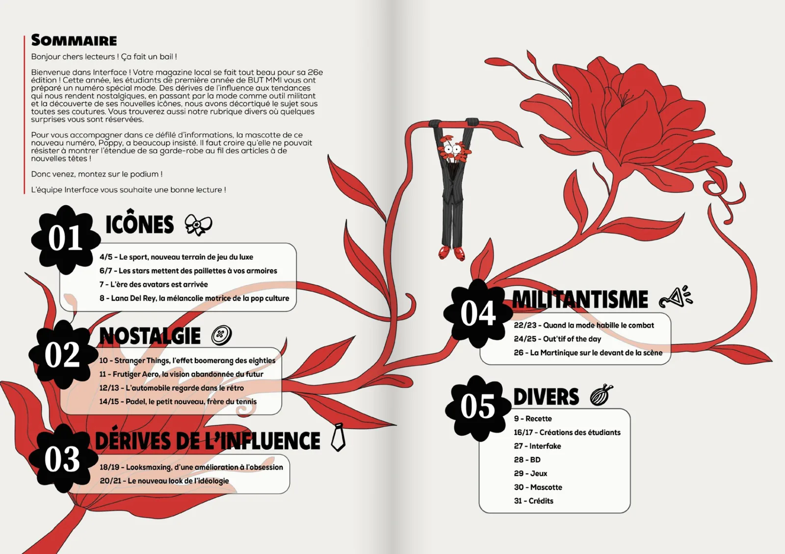

Magazine Interface
26e édition d’Interface, le magazine annuel des étudiants de BUT MMI, réalisé par toute la promotion.
- Période
- Avril 2026
- Contexte
- SAÉ 202-2 · BUT MMI 1re année
- Équipe
- 55 étudiants

Le projet
Chaque année, la promotion de 1re année de BUT MMI crée de toutes pièces un numéro du magazine Interface : articles, visuels, mise en page et recherche de sponsors. Les étudiants sont répartis en pôles (rédaction, graphisme, sponsors et logistique) qui doivent avancer ensemble en une semaine.
J’étais l’un des trois chefs de projet du comité de rédaction. Notre rôle : définir la ligne éditoriale, coordonner l’écriture des articles et livrer des textes adaptés à la mise en page du magazine papier.
- 01
Brainstorming
Thèmes des articles et ligne éditoriale
- 02
Rédaction
Écriture, relecture et reformulation
- 03
Chemin de fer
Organisation des pages du magazine
- 04
Publication
Version papier et site Interface Media
Ma contribution
En tant que chef de projet du comité de rédaction, avec deux autres étudiants, j’ai organisé le travail de notre pôle tout en participant à l’écriture :
- Organisation : planning Trello avec des tâches quotidiennes, des deadlines et des sous-groupes formés selon les affinités.
- Ligne éditoriale : brainstorming collectif, définition des rubriques et choix des articles publiés dans la version papier.
- Rédaction : écriture, relecture et reformulation des articles pour un ton jeune, accessible et crédible, et ajustement de leur longueur à la mise en page.
- Coordination : création du chemin de fer et réunions avec les pôles graphisme, sponsors et logistique.
- Web : publication sur le site Interface Media des articles non retenus pour la version papier.